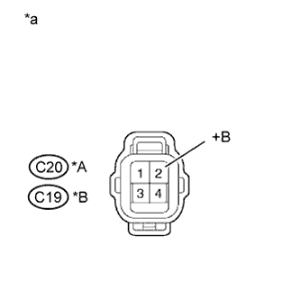

DTC P0171 System Too Lean (Bank 1) |
DTC P0172 System Too Rich (Bank 1) |
DTC P0174 System Too Lean (Bank 2) |
DTC P0175 System Too Rich (Bank 2) |
| DTC No. | DTC Detection Condition | Trouble Area |
| P0171 P0174 | With a warm engine and stable air-fuel ratio feedback, the fuel trim is considerably in error to the lean side (2 trip detection logic). |
|
| P0172 P0175 | With a warm engine and stable air-fuel ratio feedback, the fuel trim is considerably in error to the rich side (2 trip detection logic). |
|
| Required Sensors/Components | Air fuel ratio sensor, Mass air flow meter, Crankshaft position sensor |
| Frequency of Operation | Continuous |
| Fuel system status | Closed loop |
| Battery voltage | 11 V or higher |
| Either of following conditions 1 or 2 met | - |
| 1. Engine speed | Less than 1100 rpm |
| 2. Engine load | 11.5% or more |
| Purge-cut | Executing |
| Either of following conditions 1 or 2 met | - |
| 1. Average of short-term fuel trim and long-term fuel trim | 35% or more (varies with engine coolant temperature) |
| 2. Average of short-term fuel trim and long-term fuel trim | -35% or less (varies with engine coolant temperature) |
| 1.CHECK FOR ANY OTHER DTCS OUTPUT (IN ADDITION TO DTC P0171, P0172, P0174 OR P0175) |
Connect the intelligent tester to the DLC3.
Turn the engine switch on (IG).
Turn the tester on.
Enter the following menus: Powertrain / Engine and ECT / DTC.
Read DTCs.
| Result | Proceed to |
| P0171, P0172, P0174 or P0175 is output | A |
| P0171, P0172, P0174 or P0175 and other DTCs are output | B |
|
| ||||
| A | |
| 2.CHECK PCV HOSE CONNECTIONS |
Check the PCV hose connections (Click here).
|
| ||||
| OK | |
| 3.CHECK AIR INDUCTION SYSTEM |
Check the air induction system for vacuum leaks (Click here).
|
| ||||
| OK | |
| 4.PERFORM ACTIVE TEST USING INTELLIGENT TESTER (CONTROL THE INJECTION VOLUME) |
Connect the intelligent tester to the DLC3.
Start the engine.
Turn the tester on.
Warm up the engine and run the engine at an engine speed of 2500 rpm for approximately 90 seconds.
Enter the following menus: Powertrain / Engine and ECT / Active Test / Control the Injection Volume.
Perform the Control the Injection Volume operation with the engine idling.
Monitor the output voltages of the air fuel ratio and heated oxygen sensors (AFS Voltage B1S1 and O2S B1S2 or AFS Voltage B2S1 and O2S B2S2) displayed on the tester.
| Tester Display (Sensor) | Injection Volume | Status | Voltage |
| AFS Voltage B1S1 or AFS Voltage B2S1 (Air fuel ratio) | +12% | Rich | Below 3.1 V |
| AFS Voltage B1S1 or AFS Voltage B2S1 (Air fuel ratio) | -12% | Lean | Higher than 3.4 V |
| O2S B1S2 or O2S B2S2 (Heated oxygen) | +12% | Rich | Higher than 0.55 V |
| O2S B1S2 or O2S B2S2 (Heated oxygen) | -12% | Lean | Below 0.4 V |
| Status of AFS Voltage B1S1 or AFS Voltage B2S1 | Status of O2S B1S2 or O2S B2S2 | Air Fuel Ratio Condition and Air Fuel Ratio Sensor Condition | Misfire | Suspected Trouble Area | Proceed to |
| Lean/Rich | Lean/Rich | Normal | - | - | A |
| Lean | Lean | Actual air fuel ratio lean | May occur |
| A |
| Rich | Rich | Actual air fuel ratio rich | - |
| A |
| Lean | Lean/Rich | Air fuel ratio sensor malfunction | - |
| B |
| Rich | Lean/Rich | Air fuel ratio sensor malfunction | - | Air fuel ratio sensor | B |
|
| ||||
| A | |
| 5.READ VALUE USING INTELLIGENT TESTER (COOLANT TEMP) |
Connect the intelligent tester to the DLC3.
Turn the engine switch on (IG).
Turn the tester on.
Enter the following menus: Powertrain / Engine and ECT / Data List / All Data / Coolant Temp.
Read Coolant Temp twice, when the engine is both cold and warmed up.
|
| ||||
| OK | |
| 6.READ VALUE USING INTELLIGENT TESTER (MAF) |
Connect the intelligent tester to the DLC3.
Turn the engine switch on (IG).
Turn the tester on.
Enter the following menus: Powertrain / Engine and ECT / Data List / All Data / MAF and Coolant Temp.
Allow the engine to idle until Coolant Temp reaches 75°C (167°F) or higher.
Read MAF with the engine speed at 3000 rpm.
|
| ||||
| OK | |
| 7.CHECK FUEL PRESSURE |
Check the fuel pressure (Click here).
|
| ||||
| OK | |
| 8.CHECK FOR EXHAUST GAS LEAK |
Check for exhaust gas leaks.
|
| ||||
| OK | |
| 9.CHECK FOR SPARKS AND IGNITION |
Perform a spark test (Click here).
|
| ||||
| OK | |
| 10.INSPECT FUEL INJECTOR ASSEMBLY (INJECTION AND VOLUME) |
Check the injection and volume (Click here).
|
| ||||
|
| ||||
| 11.INSPECT AIR FUEL RATIO SENSOR (HEATER RESISTANCE) |
Inspect the air fuel ratio sensor (Click here).
|
| ||||
| OK | |
| 12.CHECK TERMINAL VOLTAGE (+B OF AIR FUEL RATIO SENSOR) |
|  |
Disconnect the air fuel ratio sensor connector.
Turn the engine switch on (IG).
Measure the voltage according to the value(s) in the table below.
| Tester Connection | Switch Condition | Specified Condition |
| C20-2 (+B) - Body ground | Engine switch on (IG) | 11 to 14 V |
| C19-2 (+B) - Body ground | Engine switch on (IG) | 11 to 14 V |
| *A | Bank 1 |
| *B | Bank 2 |
| *a | Front view of wire harness connector (to Air Fuel Ratio Sensor) |
|
| ||||
| OK | |
| 13.CHECK HARNESS AND CONNECTOR (AIR FUEL RATIO SENSOR - ECM) |
Disconnect the air fuel ratio sensor connector.
Disconnect the ECM connector.
Measure the resistance according to the value(s) in the table below.
| Tester Connection | Condition | Specified Condition |
| C20-1 (HA1A) - C31-17 (HA1A) | Always | Below 1 Ω |
| C20-3 (A1A+) - C30-1 (A1A+) | Always | Below 1 Ω |
| C20-4 (A1A-) - C30-2 (A1A-) | Always | Below 1 Ω |
| C19-1 (HA2A) - C31-19 (HA2A) | Always | Below 1 Ω |
| C19-3 (A2A+) - C30-7 (A2A+) | Always | Below 1 Ω |
| C19-4 (A2A-) - C30-8 (A2A-) | Always | Below 1 Ω |
| C20-1 (HA1A) or C31-17 (HA1A) - Body ground | Always | 10 kΩ or higher |
| C20-3 (A1A+) or C30-1 (A1A+) - Body ground | Always | 10 kΩ or higher |
| C20-4 (A1A-) or C30-2 (A1A-) - Body ground | Always | 10 kΩ or higher |
| C19-1 (HA2A) or C31-19 (HA2A) - Body ground | Always | 10 kΩ or higher |
| C19-3 (A2A+) or C30-7 (A2A+) - Body ground | Always | 10 kΩ or higher |
| C19-4 (A2A-) or C30-8 (A2A-) - Body ground | Always | 10 kΩ or higher |
|
| ||||
| OK | |
| 14.REPLACE AIR FUEL RATIO SENSOR |
Replace the air fuel ratio sensor (Click here).
| NEXT | |
| 15.PERFORM CONFIRMATION DRIVING PATTERN |
Connect the intelligent tester to the DLC3.
Turn the engine switch on (IG).
Turn the tester on.
Clear the DTCs (Click here).
Turn the engine switch off.
Turn the engine switch on (IG) and turn the tester on.
Start the engine and warm it up.
Drive the vehicle in accordance with the driving pattern described in Confirmation Driving Pattern.
Enter the following menus: Powertrain / Engine and ECT / DTC.
Read DTCs.
| Result | Proceed to |
| DTC P0171, P0172, P0174 or P0175 is output | A |
| DTC is not output | B |
|
| ||||
| A | |
| 16.PERFORM ACTIVE TEST USING INTELLIGENT TESTER (CONTROL THE EGR STEP POSITION) |
Connect the intelligent tester to the DLC3.
Start the engine and warm it up until the engine coolant temperature reaches 75°C (167°F) or higher.
Turn the tester on.
Enter the following menus: Powertrain / Engine and ECT / Active Test / Control the EGR Step Position.
Confirm that Throttle Idle Position is ON and check the engine idling condition and the value of MAP in the Data List while performing the Active Test.
| - | EGR Step Position (Active Test) | |
| Step 0 | Step 0 to 30 | |
| Idling condition | Steady idling | Idling changes from steady to rough idling or engine stalls |
| MAP (Data List) | 20 to 40 kPa (150 to 300 mmHg) | MAP value is at least 10 kPa (75 mmHg) higher than when EGR valve is fully closed |
|
| ||||
|
| ||||
| 17.INSPECT EGR VALVE ASSEMBLY |
Remove the EGR valve assembly (Click here).
Check if the EGR valve is stuck open.
|
| ||||
| OK | |
| 18.CHECK HARNESS AND CONNECTOR |
Check the connection and terminal contact pressure of connectors and wire harnesses between the mass air flow meter and ECM (Click here).
| NEXT | |
| 19.CHECK WHETHER DTC OUTPUT RECURS |
Connect the intelligent tester to the DLC3.
Turn the engine switch on (IG).
Turn the tester on.
Clear the DTCs (Click here).
Turn the engine switch off.
Turn the engine switch on (IG) and turn the tester on.
Start the engine and warm it up.
Drive the vehicle in accordance with the driving pattern described in Confirmation Driving Pattern.
Enter the following menus: Powertrain / Engine and ECT / DTC.
Read DTCs.
| Result | Proceed to |
| DTC P0171, P0172, P0174 or P0175 is output | A |
| DTC is not output | B |
|
| ||||
| A | |
| 20.CHECK HARNESS AND CONNECTOR (MASS AIR FLOW METER - ECM) |
Disconnect the mass air flow meter connector.
Disconnect the ECM connector.
Measure the resistance according to the value(s) in the table below.
| Tester Connection | Condition | Specified Condition |
| C27-3 (VG) - C29-14 (VG) | Always | Below 1 Ω |
| C27-2 (E2G) - C29-13 (E2G) | Always | Below 1 Ω |
| C27-3 (VG) or C29-14 (VG) - Body ground | Always | 10 kΩ or higher |
|
| ||||
| OK | |
| 21.REPLACE MASS AIR FLOW METER ASSEMBLY |
Replace the mass air flow meter assembly (Click here).
| NEXT | |
| 22.CONFIRM WHETHER MALFUNCTION HAS BEEN SUCCESSFULLY REPAIRED |
Connect the intelligent tester to the DLC3.
Turn the engine switch on (IG).
Turn the tester on.
Clear the DTCs (Click here).
Turn the engine switch off.
Turn the engine switch on (IG) and turn the tester on.
Start the engine and warm it up.
Drive the vehicle in accordance with the driving pattern described in Confirmation Driving Pattern.
Enter the following menus: Powertrain / Engine and ECT / DTC.
Read DTCs.
| Result | Proceed to |
| DTC is not output | A |
| DTC P0171, P0172, P0174 or P0175 is output | B |
|
| ||||
| A | ||
| ||
| 23.CHECK HARNESS AND CONNECTOR (AIR FUEL RATIO SENSOR - NO. 1 INTEGRATION RELAY) |
Disconnect the air fuel ratio sensor connector.
Remove the No. 1 integration relay from the engine room relay block.
Measure the resistance according to the value(s) in the table below.
| Tester Connection | Condition | Specified Condition |
| C20-2 (+B) - 1B-8 | Always | Below 1 Ω |
| C19-2 (+B) - 1B-8 | Always | Below 1 Ω |
| 1B-7 - Body ground | Always | Below 1 Ω |
| C20-2 (+B) or 1B-8 - Body ground | Always | 10 kΩ or higher |
| C19-2 (+B) or 1B-8 - Body ground | Always | 10 kΩ or higher |
|
| ||||
| OK | |
| 24.INSPECT NO. 1 INTEGRATION RELAY (A/F) |
Inspect the No. 1 integration relay (A/F) (Click here).
|
| ||||
| OK | ||
| ||